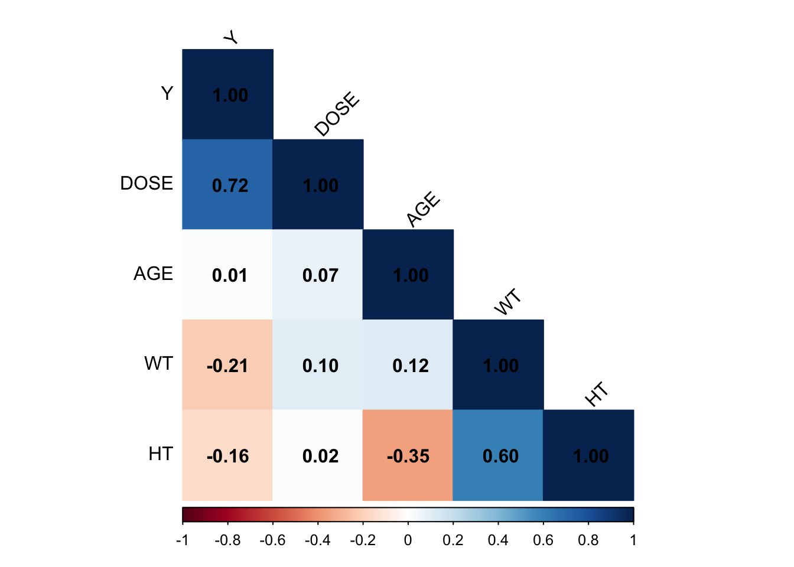
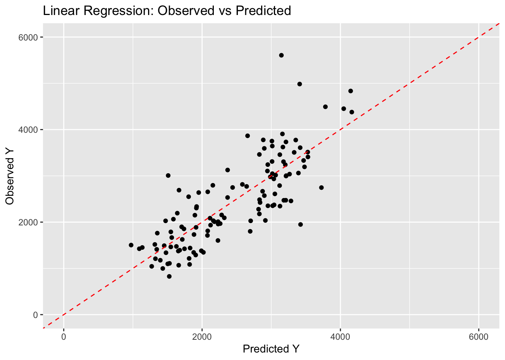
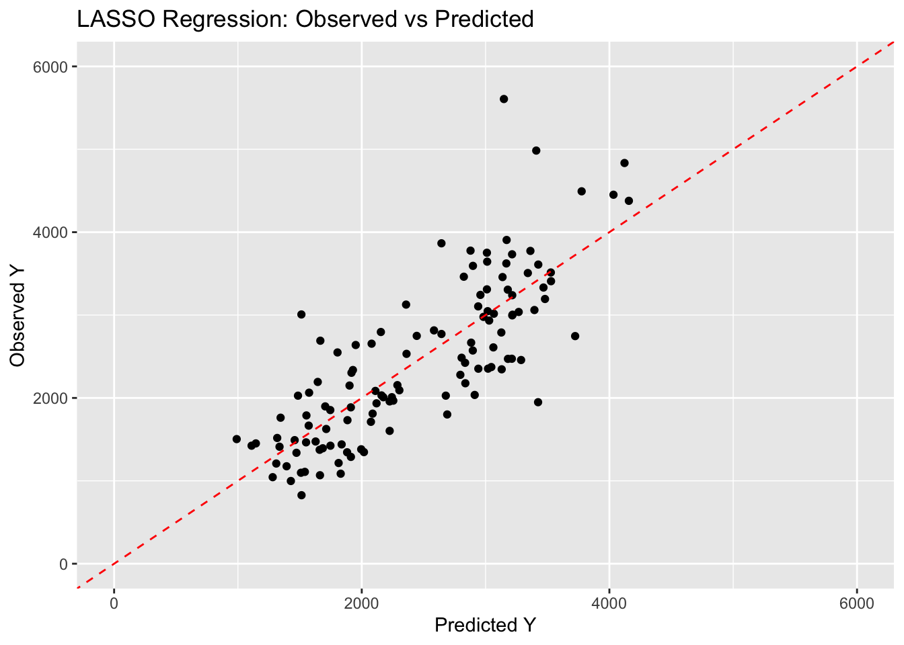
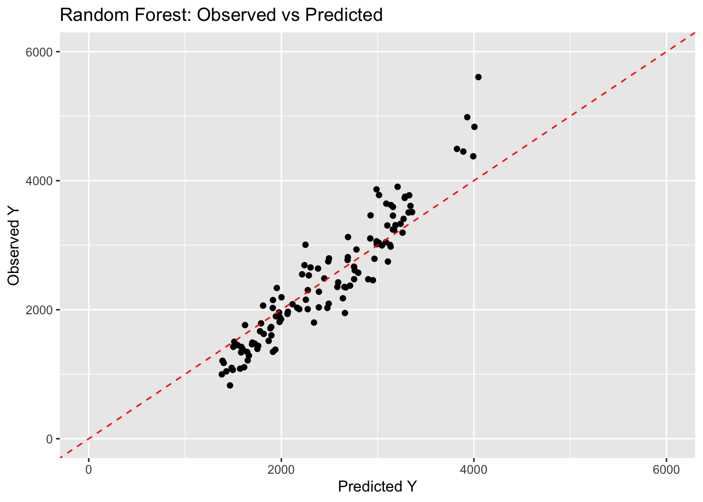
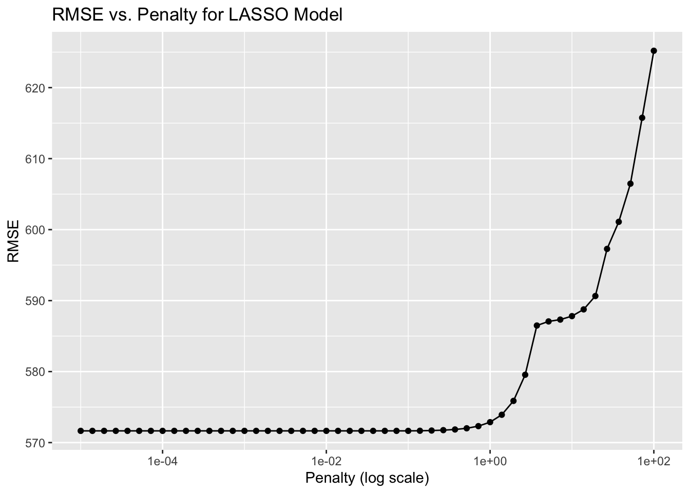
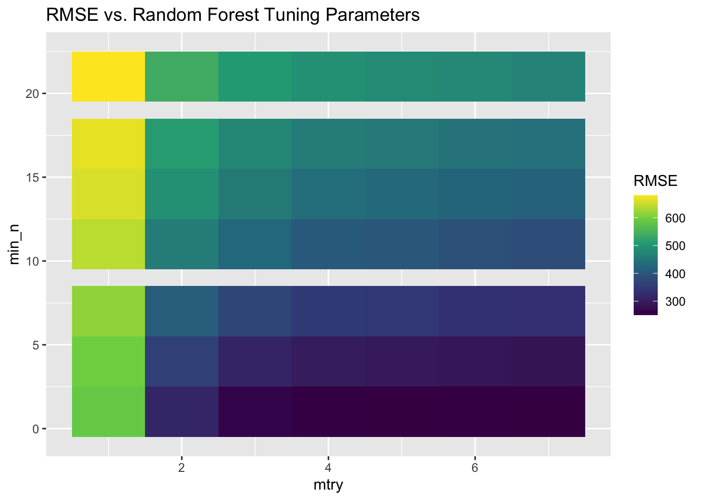
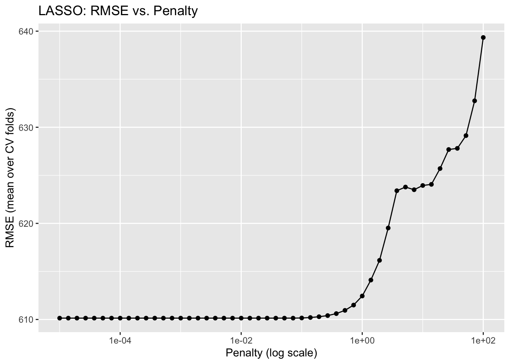
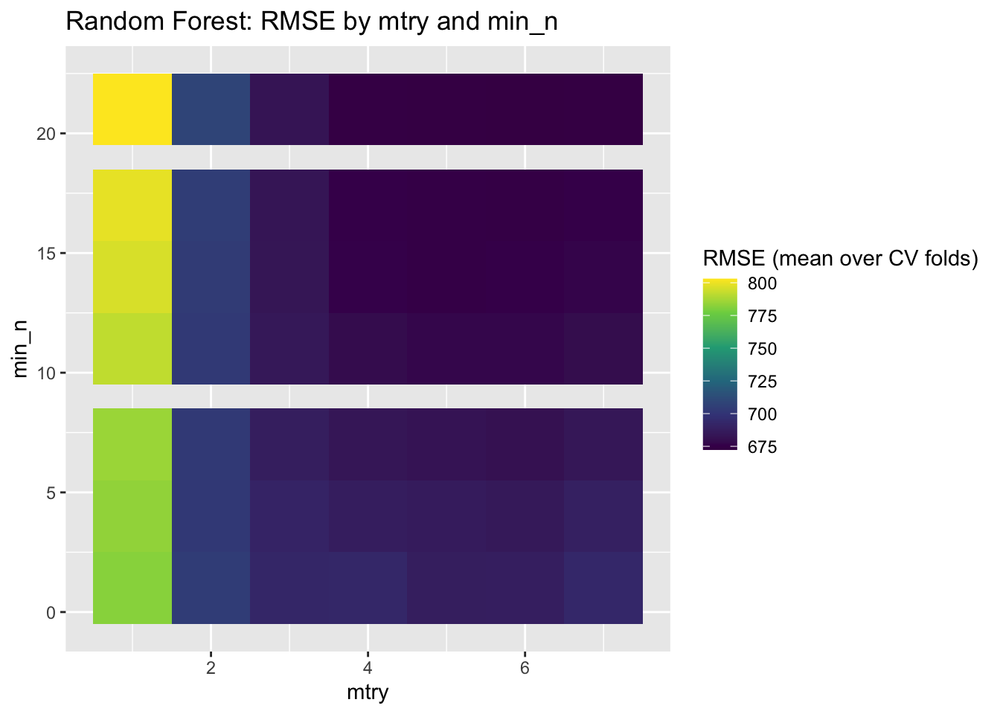

# Load necessary library
library(ggplot2)
library(tidymodels)
library(here)
library(corrplot)
library(viridis)
# Define a seed
rngseed = 1234
# Load the data
data <- readRDS(here("ml-models-exercise", "final_data.rds"))ML Models Exercise
Preliminaries
More processing
# View the unique categories in the RACE variable
unique(data$RACE)[1] 2 1 88 7
Levels: 1 2 7 88# Convert factor to character to allow reassignment
data$RACE <- as.character(data$RACE)
# Combine categories 7 and 88 into 3
data$RACE[data$RACE %in% c("7", "88")] <- "3"
# Convert back to factor
data$RACE <- as.factor(data$RACE)
# View the updated categories
unique(data$RACE)[1] 2 1 3
Levels: 1 2 3Pairwise correlations
# Compute correlation matrix
numeric_vars <- data %>% select(where(is.numeric)) # Select only numeric columns
cor_matrix <- cor(numeric_vars, use = "complete.obs") # Compute correlations
# Plot correlation matrix
corrplot(cor_matrix, method = "color", type = "lower", addCoef.col = "black",
tl.col = "black", tl.srt = 45)
Correlations are all under 0.9, so we don’t need to remove any variable.
Feature engineering
# Suppose the unit for HT is meter and for WT is kilogram
# Compute BMI and add it to the dataset
data$BMI <- data$WT / (data$HT^2)
# Preview the updated data
head(data) Y DOSE AGE SEX RACE WT HT BMI
1 2690.52 25 42 1 2 94.3 1.769997 30.10
2 2638.81 25 24 1 2 80.4 1.759850 25.96
3 2149.61 25 31 1 1 71.8 1.809847 21.92
4 1788.89 25 46 2 1 77.4 1.649993 28.43
5 3126.37 25 41 2 2 64.3 1.560052 26.42
6 2336.89 25 27 1 2 74.1 1.829862 22.13Model building
First fit
# Create a recipe for the model
# The recipe uses all predictors and converts categorical variables to dummy variables
rec <- recipe(Y ~ ., data = data) %>%
step_dummy(all_nominal_predictors()) %>% # convert factors to dummies
step_zv(all_predictors()) # remove any predictors with zero variance
### Model 1: Linear Regression (Ordinary Least Squares)
lm_mod <- linear_reg() %>%
set_engine("lm")
lm_workflow <- workflow() %>%
add_model(lm_mod) %>%
add_recipe(rec)
lm_fit <- lm_workflow %>%
fit(data = data)
### Model 2: LASSO Regression (glmnet with penalty = 0.1)
# mixture = 1 corresponds to LASSO (pure L1 regularization)
lasso_mod <- linear_reg(penalty = 0.1, mixture = 1) %>%
set_engine("glmnet")
lasso_workflow <- workflow() %>%
add_model(lasso_mod) %>%
add_recipe(rec)
lasso_fit <- lasso_workflow %>%
fit(data = data)
### Model 3: Random Forest (using ranger with a set seed)
rf_mod <- rand_forest() %>%
set_engine("ranger", seed = rngseed) %>%
set_mode("regression")
rf_workflow <- workflow() %>%
add_model(rf_mod) %>%
add_recipe(rec)
rf_fit <- rf_workflow %>%
fit(data = data)
# Linear Regression predictions
lm_preds <- predict(lm_fit, new_data = data) %>%
bind_cols(data %>% select(Y))
# LASSO predictions
lasso_preds <- predict(lasso_fit, new_data = data) %>%
bind_cols(data %>% select(Y))
# Random Forest predictions
rf_preds <- predict(rf_fit, new_data = data) %>%
bind_cols(data %>% select(Y))
# Compute RMSE for Each Model
lm_rmse <- rmse(lm_preds, truth = Y, estimate = .pred)
lasso_rmse <- rmse(lasso_preds, truth = Y, estimate = .pred)
rf_rmse <- rmse(rf_preds, truth = Y, estimate = .pred)
print(lm_rmse)# A tibble: 1 × 3
.metric .estimator .estimate
<chr> <chr> <dbl>
1 rmse standard 572.print(lasso_rmse)# A tibble: 1 × 3
.metric .estimator .estimate
<chr> <chr> <dbl>
1 rmse standard 572.print(rf_rmse)# A tibble: 1 × 3
.metric .estimator .estimate
<chr> <chr> <dbl>
1 rmse standard 380.# Observed vs Predicted Plots
# Plot for Linear Regression
p_lm <- ggplot(lm_preds, aes(x = .pred, y = Y)) +
geom_point() +
geom_abline(intercept = 0, slope = 1, linetype = "dashed", color = "red") +
scale_x_continuous(limits = c(0, 6000)) +
scale_y_continuous(limits = c(0, 6000)) +
labs(title = "Linear Regression: Observed vs Predicted",
x = "Predicted Y", y = "Observed Y")
print(p_lm)
# Plot for LASSO Regression
p_lasso <- ggplot(lasso_preds, aes(x = .pred, y = Y)) +
geom_point() +
geom_abline(intercept = 0, slope = 1, linetype = "dashed", color = "red") +
scale_x_continuous(limits = c(0, 6000)) +
scale_y_continuous(limits = c(0, 6000)) +
labs(title = "LASSO Regression: Observed vs Predicted",
x = "Predicted Y", y = "Observed Y")
print(p_lasso)
# Plot for Random Forest
p_rf <- ggplot(rf_preds, aes(x = .pred, y = Y)) +
geom_point() +
geom_abline(intercept = 0, slope = 1, linetype = "dashed", color = "red") +
scale_x_continuous(limits = c(0, 6000)) +
scale_y_continuous(limits = c(0, 6000)) +
labs(title = "Random Forest: Observed vs Predicted",
x = "Predicted Y", y = "Observed Y")
print(p_rf)
The RMSEs for linear regression, LASSO, and random forest are 571.5954, 571.6504, and 379.977, respectively. The similarity in RMSE between the linear regression and the LASSO model may be due to the penalty parameter (0.1) for LASSO being too low to cause substantial shrinkage of the coefficients, so there’s only a mild amount of regularization. The random forest performs best with the lowest RMSE and predictions are overall closer to the observations in the observed versus predicted plot.
Tuning the models
# Create a grid of penalty values (50 values, linearly spaced on a log scale)
penalty_grid <- tibble(penalty = 10^(seq(-5, 2, length.out = 50)))
# Define a LASSO model specification with penalty as a tuning parameter.
# mixture = 1 ensures pure LASSO (L1 penalty).
lasso_mod <- linear_reg(penalty = tune(), mixture = 1) %>%
set_engine("glmnet") %>%
set_mode("regression")
# Create a recipe. This example converts categorical predictors to dummies
# and removes any predictors with zero variance.
rec <- recipe(Y ~ ., data = data) %>%
step_dummy(all_nominal_predictors()) %>%
step_zv(all_predictors())
# Build a workflow that combines the recipe and the LASSO model.
lasso_wf <- workflow() %>%
add_model(lasso_mod) %>%
add_recipe(rec)
# Use the apparent() function to create resamples that contain just the data
# (i.e., a single resample of the entire dataset).
apparent_resamples <- apparent(data)
# Tune the LASSO model over the penalty grid using tune_grid().
lasso_tune_res <- tune_grid(
lasso_wf,
resamples = apparent_resamples,
grid = penalty_grid,
metrics = metric_set(rmse)
)
# Unnest the metrics from the tuning results
lasso_metrics <- lasso_tune_res %>%
unnest(cols = .metrics)
# Filter for the RMSE metric
lasso_rmse <- lasso_metrics %>%
filter(.metric == "rmse")
# Plot RMSE by penalty, using a log10 scale for the penalty axis
ggplot(lasso_rmse, aes(x = penalty, y = .estimate)) +
geom_line() +
geom_point() +
scale_x_log10() +
labs(title = "RMSE vs. Penalty for LASSO Model",
x = "Penalty (log scale)",
y = "RMSE")
The LASSO performs the best with the lowest RMSE for low penalty values and gets worse as the penalty parameter increases. The lowest RMSE of LASSO is the same as for the linear model (about 571). When λ is close to 0, the regularization effect is minimal, making the LASSO model nearly identical to the un-tuned linear model. However, as λ increases, the penalty term in the loss function becomes more influential. With a high penalty, the model becomes overly simplified, often reducing many coefficients to zero and causing it to overlook important predictor information. This results in underfitting and a higher RMSE.
# Define a random forest model with tuning for mtry and min_n; fix trees at 300.
rf_mod <- rand_forest(
mtry = tune(),
min_n = tune(),
trees = 300
) %>%
set_engine("ranger", seed = rngseed) %>%
set_mode("regression")
# Create a recipe to process the data (e.g., converting nominal predictors to dummies)
rf_recipe <- recipe(Y ~ ., data = data) %>%
step_dummy(all_nominal_predictors()) %>%
step_zv(all_predictors())
# Build a workflow that combines the recipe and the model
rf_wf <- workflow() %>%
add_model(rf_mod) %>%
add_recipe(rf_recipe)
# Set up a tuning grid with grid_regular():
# mtry from 1 to 7 and min_n from 1 to 21, with 7 levels each.
rf_grid <- grid_regular(
mtry(range = c(1, 7)),
min_n(range = c(1, 21)),
levels = 7
)
# Create resamples using the apparent() function (i.e., a single resample of the entire dataset)
rf_resamples <- apparent(data)
# Tune the model using tune_grid() over the defined grid
rf_tune_res <- tune_grid(
rf_wf,
resamples = rf_resamples,
grid = rf_grid,
metrics = metric_set(rmse)
)
# Extract and unnest the tuning metrics from the random forest tuning results
rf_metrics <- rf_tune_res %>%
unnest(cols = .metrics)
# Filter for the RMSE metric only
rf_rmse <- rf_metrics %>%
filter(.metric == "rmse")
# Create a heatmap of RMSE vs. mtry and min_n
ggplot(rf_rmse, aes(x = mtry, y = min_n, fill = .estimate)) +
geom_tile() +
scale_fill_viridis_c() +
labs(title = "RMSE vs. Random Forest Tuning Parameters",
x = "mtry",
y = "min_n",
fill = "RMSE")
The plot shows that a higher value of mtry and a lower one for min_n lead to the smallest RMSE, which performs the best.
Tuning with CV
# Reset random seed for reproducibility
set.seed(rngseed)
# Create 5-fold cross-validation repeated 5 times
cv_splits <- vfold_cv(data, v = 5, repeats = 5)
### LASSO Model Tuning ###
# Define a grid of penalty values (50 values, linearly spaced on a log scale)
penalty_grid <- tibble(penalty = 10^(seq(-5, 2, length.out = 50)))
# Define the LASSO model specification (pure LASSO with mixture = 1)
lasso_mod <- linear_reg(penalty = tune(), mixture = 1) %>%
set_engine("glmnet") %>%
set_mode("regression")
# Create a recipe for LASSO (convert nominal predictors to dummies and remove zero variance predictors)
lasso_rec <- recipe(Y ~ ., data = data) %>%
step_dummy(all_nominal_predictors()) %>%
step_zv(all_predictors())
# Combine the model and recipe into a workflow
lasso_wf <- workflow() %>%
add_model(lasso_mod) %>%
add_recipe(lasso_rec)
# Tune the LASSO model using real resamples (cv_splits) over the penalty grid
lasso_tune_res <- tune_grid(
lasso_wf,
resamples = cv_splits,
grid = penalty_grid,
metrics = metric_set(rmse)
)
### Random Forest Model Tuning ###
# Define the random forest model with mtry and min_n as tuning parameters; fix trees at 300.
rf_mod <- rand_forest(
mtry = tune(),
min_n = tune(),
trees = 300
) %>%
set_engine("ranger", seed = rngseed) %>%
set_mode("regression")
# Create a recipe for the random forest (similar to the LASSO recipe)
rf_rec <- recipe(Y ~ ., data = data) %>%
step_dummy(all_nominal_predictors()) %>%
step_zv(all_predictors())
# Combine the random forest model and recipe into a workflow
rf_wf <- workflow() %>%
add_model(rf_mod) %>%
add_recipe(rf_rec)
# Set up a tuning grid for mtry (1 to 7) and min_n (1 to 21) with 7 levels each (7 x 7 combinations)
rf_grid <- grid_regular(
mtry(range = c(1, 7)),
min_n(range = c(1, 21)),
levels = 7
)
# Tune the random forest model using the same real resamples (cv_splits)
rf_tune_res <- tune_grid(
rf_wf,
resamples = cv_splits,
grid = rf_grid,
metrics = metric_set(rmse)
)
# LASSO Model: Plot RMSE vs. Penalty
# Extract metrics for LASSO using 5-fold CV repeated 5 times
lasso_metrics <- collect_metrics(lasso_tune_res) %>%
filter(.metric == "rmse")
# Plot RMSE by penalty value (on a log10 scale)
ggplot(lasso_metrics, aes(x = penalty, y = mean)) +
geom_line() +
geom_point() +
scale_x_log10() +
labs(title = "LASSO: RMSE vs. Penalty",
x = "Penalty (log scale)",
y = "RMSE (mean over CV folds)")
# Random Forest Model: Plot RMSE vs. mtry and min_n
# Extract metrics for the random forest model
rf_metrics <- collect_metrics(rf_tune_res) %>%
filter(.metric == "rmse")
# Create a heatmap of RMSE over mtry and min_n values
ggplot(rf_metrics, aes(x = mtry, y = min_n, fill = mean)) +
geom_tile() +
scale_fill_viridis_c() +
labs(title = "Random Forest: RMSE by mtry and min_n",
x = "mtry",
y = "min_n",
fill = "RMSE (mean over CV folds)")
Compared with the results above, the RMSE for both models went up. This is because under cross-validation, RMSE values reflect true generalization performance, instead of reflecting only training error. In the cross-validation results, the LASSO has a lower RMSE than the random forest. This indicates that the random forest was likely overfitting the training data but doesn’t generalize as well under CV. Based on the cross-validation RMSE, LASSO performs better than the random forest.
Conclusion
It’s important to evaluate the model on a dataset that wasn’t used for training, such as through cross-validation, to ensure that the model generalizes well. Complex models are prone to overfitting, so tuning the parameters is essential to achieve the best overall performance.